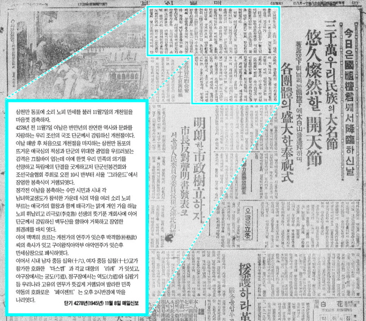

단기 4278년(1945년) 11월 8일(음력 10월 3일) 매일신보 기사

今日은 國祖 檀君께서 降臨하신 날
三千萬 우리 民族의 大名節
悠久燦爛할 "開天節"
著(저) 蒼空下 휘남리는 國旗下에 太白山을 遙拜하며
各 團體의 盛大한 奉祝式
삼천만 동포에 소리 노피 만세를 불러 11월7일의 개천일을 마음껏 경축하자.
4278년 전 11월7일 이날은 반만년의 찬연한 역사와 문화를 자랑하는 우리 조선의 국조 단군께서 강림하신 개천절이다.
이날 해방 후 처음으로 개천절을 마지하는 삼천만 동포의 뜨거운 애국심의 적성과 단군의 위대한 광업을 우르러보는 감격은 끄칠바이 업는데 이에 한껏 우리 민족의 의기를 선양하고 독립에의 단결을 굿게하고저 단군선봉건회와 조선국술협회 주최로 오전 10시 반부터 서울 '그라운드'에서 장엄한 봉축식이 거행되엿다.
정각전 이날을 봉축하는 수만 시민과 시내 각 남녀학교생도가 참석한 가운데 식의 막을 여러 소리 노피 부르는 애국가의 합창과 함께 태극기는 맑게 개인 가을 하늘 노피 휘날리고 리극로(李克魯) 선생의 뜻기푼 개회사에 이어 단군께서 강림하신 백두산을 향하야 거룩하고 장엄한 최경례를 바치엿다.
이어 맥맥히 흐르는 개천가의 연주가 잇슨후 박격험(朴格欽)씨의 축사가 잇고 구이왕직아악부 아악연주가 잇슨후 만세삼창으로 폐식하엿다.
이어서 시내 남자 중등 십육(十六), 여자 중등 십칠(十七)교가 참가한 호화한 '마스껨'과 각교 대항의 '리레'가 잇섯고, 야구장에서는 궁도(弓道), 정구장에서는 역도(力道)와 십팔기 등 우리나라 고유의 연무가 뜻깊게 거행되여 발라한 민족 약동의 호화로운 '페이젠트'는 오후 2시반경에 막을 나리엇다.
(주 : 대한민국 임시정부는 음력 10월3일을 개천절로 정하고 해마다 행사를 거행함. 대한민국 정부 수립 후엔 음력을 양력으로 환산하기가 어렵다하여 1949년부터 양력 10월 3일로 바꾸어 공휴일로 정함)